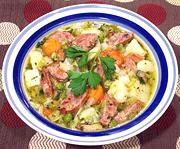

|
Bavarian Sausage StewGermany, Bavaria - Bayerischer Würsteltopf | ||||
| Serves: Effort: Sched: DoAhead: |
6 soup *** 1-1/4 hrs Yes |
This substantial and very satisfying stew is quick and easy to make, It was a smash hit as a contribution to a buffet party I attended. | |||
|
1-1/2 3 5 2 ------ 1 4 5 1-1/2 3 1 1/2 1/8 ------ 1 1 1 2 |
# oz oz oz --- # oz oz # c t t t --- c t t T |
Sausages (1) Bacon Onion Celery -- Stew Cabbage Carrots Green Beans Potatoes (2) Beef Stock Salt Pepper Nutmeg --------- Peas, frozen Caraway Seed Marjoram, dry Parsley |
For a modest size buffet party, I made up one and a half recipes and put it in a large slow cooker to keep warm. There was not one spoonfull left by the end of the evening. Prep - (15 min)
|